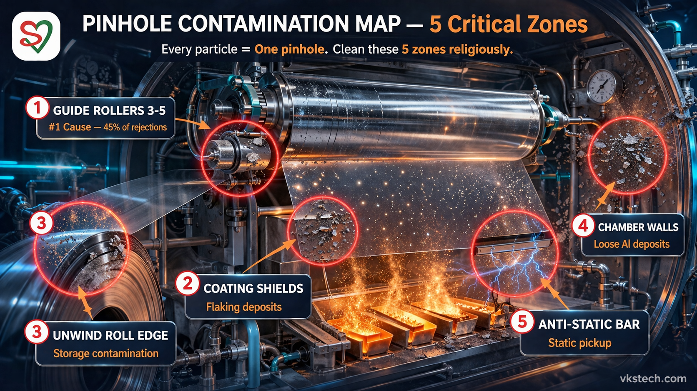
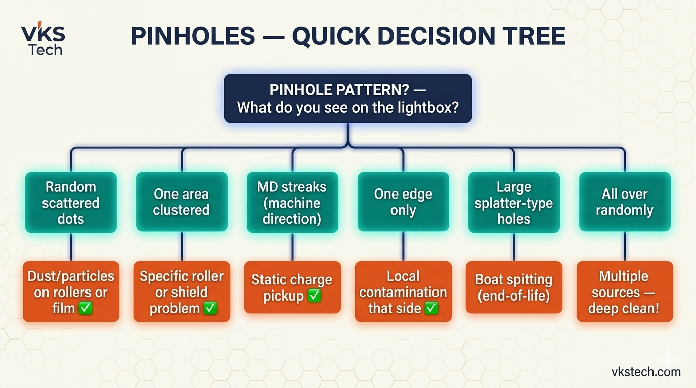
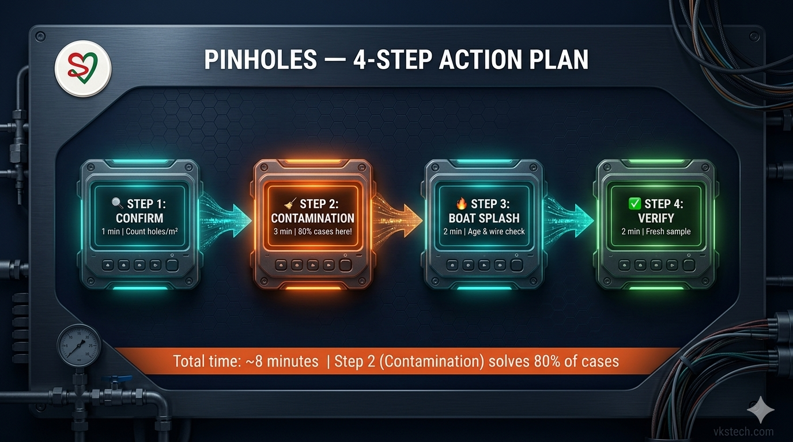

Pinholes Defect — Action Plan
This is a placeholder index.html created so the GitHub-backed path works correctly.
Replace this body with the full article content. All image and PDF references below use simple filenames that exist in this folder and will be rewritten to the correct raw.githubusercontent.com URLs by the fixed blog.js.



Downloadable tools: